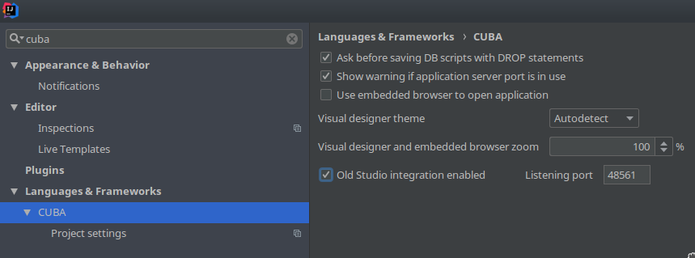
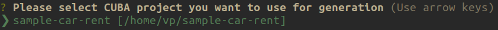
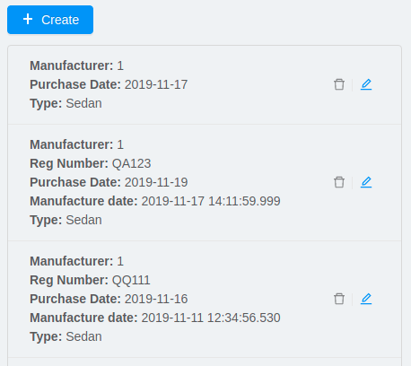
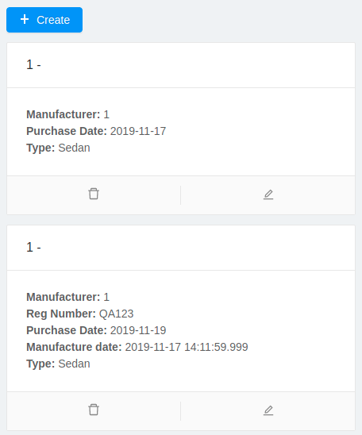
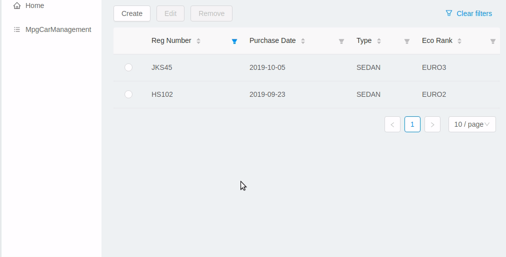
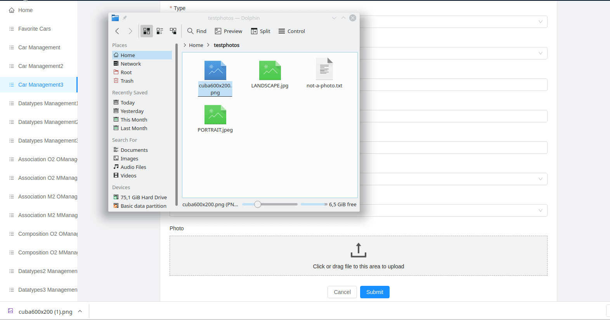

CUBA Platform Frontend Generator


Overview
This tool can be used to generate a front-end client for a CUBA Platform based application. The client can be powered by one of the following frameworks:
-
React
-
React Native
-
Polymer (deprecated)
-
a framework-agnostic TypeScript SDK
The front-end client is an alternative to the Generic UI providing front-end oriented development experience. It’s more flexible in terms of layout customization and allows easy integration of UI libraries and components from vast JavaScript ecosystem. However, it requires better knowledge of modern front-end stack.
The generator is used by CUBA Studio for front module creation. Alternatively it can be used as a standalone CLI tool.
Supported Browsers
The client supports all modern (evergreen) browsers. In order to support IE 9,10,11 additional configuration required.
Getting Started
We recommend using an IDE with TypeScript support: VSCode, WebStorm or IntelliJ IDEA Ultimate Edition.
Steps will vary depending on whether you are using the generator from CUBA Studio or as a standalone CLI tool.
Getting Started Using CUBA Studio
Installation
Install CUBA Studio.
Generating a Client from Studio
You can generate a client as a module of CUBA application. You will be able to create CRUD screens using CUBA Studio UI.
Getting Started Using CLI
Installation
Install Node.js 12+ and npm 6+ (usually comes with node).
Install the generator using npm package manager:
npm install -g @cuba-platform/front-generatorUse the generator by running the following command in command line:
gen-cuba-frontAlternatively, you can run the generator without installation using npx:
npx @cuba-platform/front-generatorGenerating a Client Using CLI
In order to generate a starter app, we need to feed the generator with project metadata (what entities do we have, etc.). There are two ways of doing that.
Passing Project Metadata from CUBA Studio
-
Open your project in CUBA Studio.
-
Open settings (
File > Settings), then openLanguages & Frameworks > CUBA. -
Tick the
Old Studio integrationcheckbox:

Now generator will be able to automatically detect CUBA projects opened in Studio.
Generate a starter React app by running the following command:
gen-cuba-front react-typescript:appGenerator will prompt you to select one of the currently opened CUBA projects.

Passing Project Metadata Manually
You can export the project model manually. Select
CUBA > Advanced > Export project model in the main menu. Studio will
generate projectModel.json file.
Use --model command line option to specify location of the project
model file:
gen-cuba-front react-typescript:app --model /work/cuba-samples/sample-sales/projectModel.jsonGenerator CLI
Run gen-cuba-front (or npx @cuba-platform/front-generator) without
arguments to see usage info.
Usage: gen-cuba-front [command] [options]
Options:
-v, --version output the version number
-h, --help output usage information
Commands:
list [options] List all available clients and their clients
polymer2:app [options] Generates polymer2 app
polymer2:blank-component [options] Generates polymer2 blank-component
polymer2:entity-cards [options] Generates polymer2 entity-cards
polymer2:entity-edit [options] Generates polymer2 entity-edit
polymer2:entity-list [options] Generates polymer2 entity-list
polymer2:entity-management [options] Generates polymer2 entity-management
polymer2:query-results [options] Generates polymer2 query-results
polymer2:service-data [options] Generates polymer2 service-data
polymer2:service-form [options] Generates polymer2 service-form
polymer2-typescript:app [options] Generates polymer2-typescript app
polymer2-typescript:blank-component [options] Generates polymer2-typescript blank-component
polymer2-typescript:entity-cards [options] Generates polymer2-typescript entity-cards
polymer2-typescript:entity-edit [options] Generates polymer2-typescript entity-edit
polymer2-typescript:entity-list [options] Generates polymer2-typescript entity-list
polymer2-typescript:entity-management [options] Generates polymer2-typescript entity-management
react-typescript:app [options] Generates react-typescript app
react-typescript:blank-component [options] Generates react-typescript blank-component
react-typescript:entity-cards [options] Generates react-typescript entity-cards
react-typescript:entity-management [options] Generates react-typescript entity-management
sdk:all [options] Generates sdk all
sdk:model [options] Generates sdk model
Polymer client is deprecated
Run gen-cuba-front <command> --help to see the list of available
options.
Most commands use interactive prompts to capture necessary inputs such
as which entity you want to use, which
view, etc.
Alternatively, answers command line parameter can be used to provide
these inputs. You may want to use it if you want to automate the
generation. answers is a base64-encoded JSON string. See
descriptions of individual
commands for details on what shall be put inside this JSON.
Example of using answers:
gen-cuba-front react-typescript:entity-management \ --dest ../model-playground/modules/front/src/app/car \ --model /home/myusername/model-playground/projectModel.json \ --dirShift ../../ \ --answers eyJlZGl0VmlldyI6eyJuYW1lIjoiY2FyLXZpZXciLCJlbnRpdHlOYW1lIjoibXBnJENhciJ9LCJlZGl0Q29tcG9uZW50TmFtZSI6Im1wZy1jYXItZWRpdCIsImxpc3RWaWV3Ijp7Im5hbWUiOiJjYXItdmlldyIsImVudGl0eU5hbWUiOiJtcGckQ2FyIn0sImxpc3RDb21wb25lbnROYW1lIjoibXBnLWNhci1saXN0IiwibGlzdFR5cGUiOiJsaXN0IiwiZW50aXR5Ijp7Im5hbWUiOiJtcGckQ2FyIn0sIm1hbmFnZW1lbnRDb21wb25lbnROYW1lIjoibXBnLWNhci1tYW5hZ2VtZW50In0=
Commands Description
react-typescript:app
Generates a React starter app. See Getting started.
Options:
-d, --dest [dest] destination directory
-m, --model [model] specify path to project model, if given no interactive prompt will be invoked
-h, --help output usage information
react-typescript:entity-management
Generates:
-
Route / main menu item
-
Editor screen to create or edit an entity
-
Browser screen to view the list of entities and/or perform CRUD operations.
Options:
-d, --dest [dest] destination directory
-m, --model [model] specify path to project model, if given no interactive prompt will be invoked
-ds, --dirShift [dirShift] directory shift for html imports e.g ../../
-a, --answers [answers] fulfilled params for generator to avoid interactive input in serialized JSON string
-h, --help output usage information
Browser screen is available in one of the following flavors (we call it list types):
-
list

-
cards

-
table

answers format:
{
"editView": {
"name": "car-edit", // Name of view that will be used in Editor screen
"entityName": "mpg$Car" // Entity name
},
"editComponentName": "CarEdit", // Editor component class name
"listView": {
"name": "car-edit", // Name of view that will be used in Browser screen
"entityName": "mpg$Car" // Entity name
},
"listComponentName": "CarCards", // Browser component class name
"listType": "cards", // List type: list, cards or table
"entity": {
"name": "mpg$Car" // Entity name
},
"managementComponentName": "CarManagement" // Management component class name (renders either Editor or Browser depending on current route)
}
}
react-typescript:entity-cards
Generates a list of entities where each entity is represented by a card
(similar to a Browser component with "listType": "cards", see
react-typescript:entity-management)
Options:
-d, --dest [dest] destination directory
-m, --model [model] specify path to project model, if given no interactive prompt will be invoked
-ds, --dirShift [dirShift] directory shift for html imports e.g ../../
-a, --answers [answers] fulfilled params for generator to avoid interactive input in serialized JSON string
-h, --help output usage information
answers format:
{
"entityView": {
"name": "favoriteCar-view", // View name
"entityName": "mpg$FavoriteCar" // Entity name
},
"componentName": "FavoriteCarCards", // Component class name
"entity": {
"name": "mpg$FavoriteCar" // Entity name
}
}
react-typescript:blank-component
Generates a blank component.
Options:
-d, --dest [dest] destination directory
-m, --model [model] specify path to project model, if given no interactive prompt will be invoked
-ds, --dirShift [dirShift] directory shift for html imports e.g ../../
-a, --answers [answers] fulfilled params for generator to avoid interactive input in serialized JSON string
-h, --help output usage information
answers format:
{
"componentName": "BlankComponent" // Component class name
}
sdk:all
Generates framework-agnostic TypeScript SDK. It is
also generated when executing react-typescript:app command.
Options:
-d, --dest [dest] destination directory
-m, --model [model] specify path to project model, if given no interactive prompt will be invoked
-h, --help output usage information
sdk:model
Generates SDK model only.
Options:
-d, --dest [dest] destination directory
-m, --model [model] specify path to project model, if given no interactive prompt will be invoked
-h, --help output usage information
React Client
Overview of React Client
Running the Client
You can run the client by executing the following command:
npm run startThis will launch a dev server and allow you to access your app at
localhost:3000.
If the client was generated via CUBA Studio (as a module of CUBA application) you can use Gradle in order to run npm tooling:
./gradlew npm_run_start
There is a known bug in Gradle node plugin which does not kill JS development server on task interruption.
You can also run your CUBA application normally (e.g. via
CUBA → Start Application Server) and front-end client will be
accessible at localhost:8080/app-front (context root can be
configured). However, in this case hot
deploy will not be available. We recommend using one of the above
methods during development.
Technologies
The client is based on the following frameworks and libraries:
-
React - UI rendering;
-
MobX - reactive state management;
-
Ant Design - UI components;
-
React Router - routing;
-
CUBA React Core - CUBA React core components and utilities;
-
CUBA React UI - CUBA React UI components and utilities;
-
CUBA REST JS - interaction with СUBA generic REST API;
-
Create React App - build scripts and configuration;
Project Structure
Here is the structure of the newly generated project:
app-name/
package.json
package-lock.json
node_modules/
public/
index.html
favicon.ico
src/
index.css
index.tsx <- App entry point. Do not move/rename this file
routing.ts <- Routing configuration
app/
App.css
App.tsx <- App shell. Switches between Login form and internal application
cuba/ <- CUBA Model. See [Backend model]
entitites/ <- Project entities
base/ <- Entities from addons and framework
enums/ <- Project enums
If the client was generated using Studio it’s placed in modules/front
directory of main project.
Creating React Components
It is highly recommended to read full React documentation. In React, like in many modern frameworks everything is a component. We use components to create reusable blocks of our application as well as particular pages and screens.
Let’s create our first component: place file Button.tsx in src
directory:
import React, { Component } from 'react';
export class Button extends Component {
render() {
<button>Click me</button>;
}
}Alternatively, you can create the component using a function:
export function Button(props) {
return <button>{props.name}</button>;
}There are some useful components provided in CUBA React Core and CUBA React UI libraries. Please see the corresponding sections for more details.
Observable State with MobX
MobX is a library for reactive state management which enables to work with state in a convenient and concise way.
Consider the following example:
@observer
class Counter extends React.Component {
@observable
count = 0;
render() {
return (
<div>
Counter: {this.count} <br />
<button onClick={this.handleInc}> + </button>
<button onClick={this.handleDec}> - </button>
</div>
)
}
handleInc = () => {
this.count++;
}
handleDec = () => {
this.count--;
}
}As soon as we decorate a class or a function component as
observer, it
automatically subscribes to changes on any
observable value or object
i.e. in the example above changing count property will result in
automatic re-render of the component.
Routing and Menu
Routing is based on well-known
React
Router library. The generated app has a single point (src/routing.ts)
to define screens which will be automatically placed in the main menu:
menuItems.push({
pathPattern: '/pets', // pattern may be used to consume some parameters, e.g.: /pets/:petId?
menuLink: '/pest',
component: PetBrowser, // component to be rendered, should be imported in `routes.ts`
caption: 'Pets' // Menu item caption
});The src/App.tsx contains Switch component which renders screen
depending on the URL path:
<Switch>
<Route exact={true} path="/" component={HomePage}/>
{collectRouteItems(menuItems).map(route => ( // get all routes from main and sub menus
<Route key={route.pathPattern} path={route.pathPattern} component={route.component}/>
)}
</Switch>You can manually add Route to Switch component or customize the
structure used in routes.ts for example in order to create
hierarchical menu.
To create hierarchical menu you need to create SubMenu instance in
routes.ts and add it to menuItems
// This is RouteItem object that we want to see in User Settings sub menu
const userProfileRouteItem = {
pathPattern: "/profile",
menuLink: "/profile",
component: UserProfile,
caption: "UserProfile"
};
// SubMenu
const userSettingsSubMenu = {
caption: 'UserSettings', // add router.UserSettings key to src/i18n/en.json for valid caption
items: [userProfileRouteItem]};
// Add sub menu to menu config
menuItems.push(userSettingsSubMenu);Sub menus can have unlimited nesting. One sub menu could be used as item of another.
Forms
In order to facilitate data binding, Ant Design’s
Form component and utilities are
used in the app. On top of that we provide a Field component which
automatically renders corresponding component basing on metadata. See
the following example:
<Field
entityName={Car.NAME}
propertyName="manufacturer"
form={this.props.form}
formItemOpts={{ style: { marginBottom: "12px" } }}
getFieldDecoratorOpts={{
rules: [{ required: true }]
}}
componentProps= {{
maxLength: 4
}}
/>You can customize underlying components, validation rules and binding
using getFieldDecoratorOpts and componentProps properties.
I18n
i18n is powered by react-intl library.
Out of the box React client supports en and ru locales.
Adding New Localized Content
-
Add new messages to
src/i18n/{locale}.jsonfiles -
Refer to them from your code using standard
react-intlcomponents or API (see documentation)
Overriding Existing Messages
Simply replace existing messages in src/i18n/{locale}.json files. This
way you can override messages in client app,
CUBA React UI components and some of the
messages in antd components.
Adding Support for New Locales
-
Add a corresponding
{locale}.jsonmessage pack. Note that it shall contain messages for CUBA React UI components (keys starting withcuba-react) andantdFormvalidation messages (keys starting withantd.form.validation) -
Create a mapping between locale and message pack by modifying
messagesMappinginsrc/i18n/i18nMappings.ts -
Create a mapping between locale and
antd/es/locale-provider/Localeobject by modifyingantdLocaleMappinginsrc/i18n/i18nMappings.ts. This is required because most of the messages inantdcomponents are translated by tellingantdto use one of the predefined locales. An extensive list of locales supported byantdcan be found here. -
Add import of corresponding moment locale to
index.tsx, e.g.import 'moment/locale/ru';> This is required because some ofantdcomponents use localized messages frommoment. -
Add a means of switching to the new locale. E.g. if you are using the default
LanguageSwitcher- add a locale option into it.
Customizing Theme
Ant Design provides a possibility to
customize theme using
less and overriding built-in variables. You can also use these
variables in your own code.
In order to do so, you will need to make some modifications to the generated app.
You will have to enable deprecated inline Javascript in lessasantdmakes heavy use of it. Reasons for deprecation.
-
Install the required dependencies. Note that we are using react-app-rewired to modify the webpack config without having to
eject.
npm i react-app-rewired less less-loader customize-cra babel-plugin-import --save-dev-
Create
config-overrides.jsfile in the app root. The file shall look like this.
const {addLessLoader, override, fixBabelImports} = require("customize-cra");
const path = require('path');
module.exports = override(
fixBabelImports('import', {
libraryName: 'antd',
libraryDirectory: 'es',
style: true,
}),
addLessLoader({
javascriptEnabled: true,
modifyVars: {
'overrideTheme': `true; @import "${path.resolve(__dirname, './src/theme.less')}";`,
},
}),
);Now you can place your overrides in src/theme.less:
@primary-color: #1DA57A;You can use antd variables in your code like this:
@import "~antd/es/style/themes/default";
body {
background: @list-header-background;
}References:
-
detailed documentation on Ant Design website
CSS Methodology
Both the generated client and CUBA React UI follow RSCSS methodology. Additionally, we adopt Base Rules from SMACSS methodology.
Backend Model
src/cuba directory contains TypeScript representation of project’s
entities, views and facades to access REST services. See more details in
TypeScript SDK section. Here is the layout of the
directory:
-
entities- project entities and views; -
entities/base- framework and addons entities; -
enums- project enums; -
services.ts- middleware services exposed to REST; -
queries.ts- REST queries.
Consider the Role entity class of CUBA Framework generated in
typescript:
src/cuba/entities/base/sec$Role.ts
export class Role extends StandardEntity {
static NAME = "sec$Role";
name?: string | null;
locName?: string | null;
description?: string | null;
type?: any | null;
defaultRole?: boolean | null;
permissions?: Permission[] | null;
}-
You can easily access entity name by static
NAMEproperty:Role.NAME, -
The class contains all properties of the domain model entity including ones from class hierarchy. Reference fields have corresponding types as well so that you can work with them in a type-safe manner:
function changeRole(role: Role) {
role.defaultRole = true; // ok
role.defaultRole = 'foo'; // compilation fails
}Synchronizing Project Model
In order to regenerate project model to conform changes in the backend you can use the following command:
$ npm run `update-model`Security
Since React client works via Generic REST API endpoints, the backend (CUBA) application should have properly configured Security Roles and Access groups. See the corresponding chapter in REST API documentation.
Package cuba-rest-js provide methods, which allows check for user
runtime security permissions for entity attributes and operations. *
getAttributePermission checks entity attribute permission and could
return DENY VIEW or MODIFY * isOperationAllowed checks entity
operation permission and returns true or false
Building the Client
$ npm run build command builds your app for production use. See
build folder.
See available scripts in Create React App documentation.
Configuration
By default, client deployed to Tomcat is built with production preset
and aimed to be served under app-front context. Use PUBLIC_URL env
variable to change this behavior (see .env.production.local).
The client served from development server has absolute URL of REST API
specified in REACT_APP_CUBA_URL (see .env.development.local).
See src/config.ts for full list of common application settings used in
runtime.
React Native Client
Running the Client
Install dependencies:
npm installThe client uses Expo. You may prefer to install Expo CLI globally and use it from command line directly, or use it via npm scripts, which doesn’t require global installation.
# with Expo CLI installed globally
expo [command] [options]
# without global installation
npm run expo -- [command] [options]To install Expo CLI globally:
npm install -g expo-cliSee Expo documentation for details on available commands and options. If you are running Expo via npm scripts, note that there convenience scripts for the most frequently used commands:
# start (restart) a local server for the app:
# with Expo CLI installed globally:
expo start
# via generic npm script:
npm run expo -- start
# via convenience npm script:
npm run start
# run the project in the browser:
# with Expo CLI installed globally:
expo start --web
# via generic npm script:
npm run expo -- start --web
# via convenience npm script:
npm run web
# run the project on an Android device or emulator:
# with Expo CLI installed globally:
expo start --android
# via generic npm script:
npm run expo -- start --android
# via convenience npm script:
npm run android
# run the project in an iOS simulator:
# with Expo CLI installed globally:
expo start --ios
# via generic npm script:
npm run expo -- start --ios
# via convenience npm script:
npm run ios
# eject:
# with Expo CLI installed globally:
expo eject
# via generic npm script:
npm run expo -- eject
# via convenience npm script:
npm run eject
# passing options to a convenience script:
npm run android -- --clear
# which would be the same as:
expo start --android --clear
In order to run the app on an emulator/simulator you may need to change REACT_NATIVE_APP_CUBA_URLin.envfromlocalhostto your IP address. You may need to clear the React Native Packager cache for the change to take effect (e.g.expo start --android --clearornpm run android — --clear).
Technologies
The client is based on the following frameworks and libraries:
-
React Native - UI rendering;
-
MobX - reactive state management;
-
CUBA React Core - CUBA React core components and utilities;
-
CUBA REST JS - interaction with СUBA generic REST API;
-
Expo - development tools for React Native;
Polymer-based Client (Deprecated)
Documentation can be found here.
CUBA React Core Components
CubaAppProvider
CubaAppProvider initializes main CUBA React Core components and
provides them to the client application. It receives an instance of REST
API service and an optional config object which has the following
interface:
import {PropertyType} from "@cuba-platform/rest";
export interface CubaAppConfig {
dataTransferFormats?: Partial<Record<PropertyType, string>>;
displayFormats?: Partial<Record<PropertyType, string>>;
}dataTransferFormats can be used to override the default formats used
to (de)serialize the data transferred by REST API.
displayFormats can be used to override the formats used for data
presentation.
See PropertyType in CUBA REST JS API docs for the list of available property types.
Only formats for temporal types can currently be overridden this way
<CubaAppProvider cubaREST={cubaREST}
config={{
dataTransferFormats: {
localDateTime: 'DD/MM/YYYY HH:mm:ss'
}
}}
>
// App component tree
</CubaAppProvider>MainStore
MainStore contains common application data. It’s being initialized
using <CubaAppProvider>.
You can inject it in any component using @injectMainStore decorator:
@injectMainStore
@observer
export class AppInfo extends React.Component<MainStoreInjected> {
render() {
if (!this.props.mainStore) {
return null;
}
const {
initialized,
authenticated,
userName,
metadata,
messages,
enums
} = this.props.mainStore;
return (
<ul>
<li>App initialized: {initialized ? 'yes' : 'no'}</li>
<li>User authenticated: {authenticated ? 'yes' : 'no'}</li>
<li>User name: {userName}</li>
<li>Metadata: {JSON.stringify(metadata)}</li>
<li>Messages: {JSON.stringify(messages)}</li>
<li>Enums: {JSON.stringify(enums)}</li>
</ul>
)
}
}DataCollectionStore
DataCollectionStore is a MobX based store for loading entity
collections. It can be created via collection() initializer function:
dataCollection = collection<Pet>(Pet.NAME, {
view: 'pet-with-owner-and-type',
sort: 'identificationNumber',
filter: {conditions: [{property: 'name', operator: "contains", value: 'Ro'}]},
limit: 10,
offset: 0,
loadImmediately: true, // true by default
}
);Typically it’s being used to display list of entities. Since it’s
reactive, any changes in items and status will trigger re-render of
@observer components:
@observer
class CarList extends React.Component {
carsData = collection<Car>(Car.NAME, {view: 'car-view', sort: '-updateTs'});
render() {
if (this.carsData.status === "LOADING") return 'Loading...';
return (
<ul>
{this.carsData.items.map(car =>
<li>{car._instanceName}</li>
)}
</ul>
)
}
}ClientSideDataCollectionStore
ClientSideDataCollectionStore is a variant of DataCollectionStore intended for situations when data shall be operated client-side. It is useful for example when handling Composition relationship. ClientSideDataCollectionStore can be created via clientSideCollection() initializer function.
dataCollection = clientSideCollection<Pet>(Pet.NAME, {
allItems: entityInstancesArray,
view: 'pet-with-owner-and-type',
sort: 'identificationNumber',
filter: {conditions: [{property: 'name', operator: "contains", value: 'Ro'}]},
limit: 10,
offset: 0,
loadImmediately: true, // true by default
}
);ClientSideDataCollectionStore inteface extends DataCollectionStore adding the following members:
-
allItemsfield - array of entity instances with default sort order and no filtering applied. -
adjustItemsmethod - setsitemsbased onallItemsand other conditions. Currently it only performs the client-side sorting based onsortfield, client-side filtering is not currently supported.
DataInstanceStore
DataInstanceStore is used to work with a single instance of some
Entity. It can be created via instance() initializer function:
dataInstance = instance<Pet>(Pet.NAME, {view: 'pet-with-owner-and-type', loadImmediately: false});Use dataInstance.commit() method to perform entity update:
dataInstance.item.name = 'New Name';
dataInstance.commit()API Reference
API reference for CUBA React Core components can be found here.
CUBA React UI Components
EntityProperty
<EntityProperty> component is aimed to display a value of some
Entity’s property. It automatically applies formatting according to the
type of property and adds a corresponding label from global message pack
(defined on the backend)
<EntityProperty entityName={Pet.NAME}
propertyName='birthDate'
value={pet.birthDate}/>FormField
<FormField> component automatically creates correct Form UI component
based on entity and property names:
<FormField entityName={Pet.NAME} propertyName='birthDate'/>For the attributes with relationship it’s possible to provide an
instance of DataCollectionStore via optionsContainer prop to render
options list
petTypesDc = collection<PetType>(PetType.NAME, {view: '_minimal', sort: 'name'});
...
<FormField entityName={Pet.NAME}
propertyName='type'
optionsContainer={this.petTypesDc}/>EntityEditor
EntityEditor component is a form with dynamically rendered fields representing entity properties. It uses FormField to render correct input components (e.g. Checkbox, Datepicker, etc.) depending on entity property type. The list of displayed fields (that is, the list of properties to be edited) can be configured via fields prop.
<EntityEditor entityName={nestedEntityName}
fields={this.fields}
dataInstance={this.dataInstance}
associationOptions={this.associationOptions}
onSubmit={this.handleSubmit}
onCancel={this.closeDrawer}
submitButtonText='common.ok'
/>API: EntityEditorProps.
NestedEntityField
NestedEntityField is a form field component that is used in the context of One-to-One Composition and represents the nested entity. It is a control that allows to create, edit or remove the nested entity. Create/edit will open an EntityEditor for the nested entity. FormField will automatically render a NestedEntityField for an One-to-One Composition entity property.
| Multiple levels of Composition (i.e. nested entities that themselves contain nested entities) are currently not supported. |
API: NestedEntityFieldProps.
NestedEntitiesTableField
NestedEntitiesTableField is a form field component that is used in the context of One-to-Many Composition and represents the nested entities. It will render a DataTable with buttons to create, edit or remove nested entities. Clicking create or edit button will open an EntityEditor. FormField will automatically render a NestedEntitiesTableField for an One-to-Many Composition entity property.
| Multiple levels of Composition (i.e. nested entities that themselves contain nested entities) are currently not supported. |
API: NestedEntitiesTableField.
FileUpload
FileUpload is a form field that allows uploading, removing and downloading files. For image files it allows to preview and download the file via ImagePreview component. FormField will automatically render a FileUpload for a FileDescriptor entity property.

API: FileUploadProps.
ImagePreview
ImagePreview allows to preview or download an image. It works with an object URL.
API: ImagePreviewProps.
DataTable
<DataTable> is used to present data in tabular form.
It uses Ant Design’s Table under the hood and provides the following additional benefits:
-
out-of-the-box integration with
DataCollectionStore -
powerful filters
-
support for action buttons (e.g. for CRUD operations)
At the same time <DataTable> provides developer with a full access to
underlying Table via its tableProps and columnDefinitions
properties (see below).
Example of using <DataTable> API:
<DataTable dataCollection={this.dataCollection}
columnDefinitions={[
'item',
'manufacturer',
{
field: 'price',
columnProps: {
align: 'right'
}
}
]}
onSelectedRowChange={this.onSelectedRowChange}
buttons={buttons}
tableProps={{
bordered: true
}}
/>-
dataCollection- instance ofDataCollectionStore -
columnDefinitions- describes the columns to be displayed. See more details below. -
onSelectedRowChange- callback that takes the id of selected row, can be used together withbuttonse.g. to facilitate CRUD operations -
buttons- array of React elements representing controls that will be rendered above the table -
tableProps- can be used to override any of the underlying Table properties
Deprecated props (use columnDefinitions instead):
-
fields- array of entity property names -
columnProps- can be used to override underlying Column properties. Applied to every column.
columnDefinitionsis more flexible and provides greater ability to customize the columns.columnDefinitionswill take precedence overfieldsandcolumnPropsif used simultaneously.
columnDefinitions
columnDefinitions describes the columns to be displayed. The columns
can represent entity properties or have arbitrary content (for example:
an action button column, a calculated field column).
There are 3 ways you can define a column:
1. Simply put an entity property name as a string. In this case
DataTable will render a column with default settings for that
property.
<DataTable
dataCollection={this.dataCollection}
columnDefinitions={[
'manufacturer',
// more columns
]}
/>2. If you want to customize the default column, use a
ColumnDefinition object where field is an entity property name and
columnProps is an antd
ColumnProps object. The
properties you put in columnProps will override the default
properties.
<DataTable
dataCollection={this.dataCollection}
columnDefinitions={[
{
field: 'manufacturer', // property name
columnProps: { // antd ColumnProps object
align: 'right'
}
},
// more columns
]}
/>3. If you want a column not bound to an entity field, create it from
scratch using columnProps and do not specify a field.
<DataTable
dataCollection={this.dataCollection}
columnDefinitions={[
{
columnProps: { // antd ColumnProps object
render: (text, record) => { /* render some custom content */ }
}
},
// more columns
]}
/>If you need even more control, you may want to start with a vanilla antd
Table and take a look into
exported functions in DataTableHelpers. These functions are used to
create DataTable custom functionality such as custom filters. You
may also want to look into using DataTableCustomFilter directly. Note
that both these approaches may require deeper understanding of
DataTable internal workings.
API Reference
API reference for CUBA React UI components can be found here.
TypeScript SDK
TypeScript SDK contains CUBA data model (entities and enums), rest services and queries as TypeScript classes.
The SDK is framework-agnostic, meaning that in addition to using it with our React client, you can use it with any TypeScript-compatible framework such as Angular of Vue.
It’s possible to generate the following configurations of SDK depending on your needs (see usage instruction):
-
gen-cuba-front sdk:model- generates entities and enums -
gen-cuba-front sdk:all- generates all toolkit - entities, enums, queries and services
SDK can be used for front-end clients and Node.js-based BFF (Backend for Frontend) development.
Entities
Persistent Entities
Consider the Role entity class of CUBA Framework generated in
TypeScript:
src/cuba/entities/base/sec$Role.ts
export class Role extends StandardEntity {
static NAME = "sec$Role";
name?: string | null;
locName?: string | null;
description?: string | null;
type?: any | null;
defaultRole?: boolean | null;
permissions?: Permission[] | null;
}-
you can easily access entity name by static
NAMEproperty:Role.NAME, -
class contains all properties of domain model entity including from class hierarchy, reference fields have corresponding types as well so that you can work with them in a type-safe manner:
function changeRole(role: Role) {
role.defaultRole = true; // ok
role.defaultRole = 'foo'; // compilation fails
}Non-persistent Entities
CUBA Platform supports non-persistent entities in model. Entity class
should be annotated with
com.haulmont.chile.core.annotations.MetaClass, and extended from
com.haulmont.cuba.core.entity.BaseUuidEntity. Class properties
annotated with com.haulmont.chile.core.annotations.MetaProperty will
be included in generated model.
Source:
package com.company;
import com.haulmont.chile.core.annotations.MetaClass;
import com.haulmont.chile.core.annotations.MetaProperty;
import com.haulmont.cuba.core.entity.BaseUuidEntity;
@MetaClass(name = "SampleUserInfo")
public class SampleUserInfo extends BaseUuidEntity {
@MetaProperty
public String firstName;
@MetaProperty
public String lastName;
}Generated:
export class SampleUserInfo {
static NAME = "SampleUserInfo";
firstName?: string | null;
lastName?: string | null;
}Enums
CUBA REST API module uses enum’s constant name in client-server communication. SDK contains generated string enums e.g.:
export enum CarType {
SEDAN = "SEDAN",
HATCHBACK = "HATCHBACK"
}In order to get enum id and localized caption, you can query full
information about enums in runtime using loadEnums method of
cuba-rest-js:
import {EnumInfo, initializeApp} from "@cuba-platform/rest";
const cubaREST = initializeApp();
cubaREST.loadEnums()
.then(((enums: EnumInfo[]) => {
console.log('enums', enums)
}));Response example:
[{
"name": "com.company.mpg.entity.CarType",
"values": [
{
"name": "SEDAN",
"id": "SEDAN",
"caption": "Sedan"
},
{
"name": "HATCHBACK",
"id": "HATCHBACK",
"caption": "Hatchback"
}
]
}]REST API
Generated front-end clients use Generic REST API. The detailed documentation on the API endpoints is published here.
CUBA REST JS library is used to communicate with Generic REST API. Documentation and API reference can be found here.